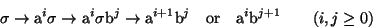

This is certainly a Formal Grammar. The obvious question to ask is: what language does it define? Which strings of a's and b's can we produce with these productions? Let me call the language L.
The best thing to do at this stage is usually to mess about a bit
applying the rules just to see what kind of pattern emerges, if any.
Obviously `a' and `b' are in L. If we apply (1) and then (4) we get
`ab' in L. If we apply (1) twice we get

 aa
aa .
This is still `abstract', in that it still contains elements of the
abstract alphabet. If we now apply (3) we get `aaa' in L.
.
This is still `abstract', in that it still contains elements of the
abstract alphabet. If we now apply (3) we get `aaa' in L.
Let me now prove a theorem which will tell us what L looks like.
So any application of (3) or (4) will make our string concrete and stop the process. This means that we generate strings in L by arbitrary combinations of (1) and (2) followed by precisely one application of either (3) or (4).
Now (1) followed by (2) gives

 a
a
 a
a b
while (2) followed by (1) gives
b
while (2) followed by (1) gives


 b
b a
a b.
b.
Note that these produce the same result. So the order of application of (1) and (2) does not matter. Thus we can simplify our earlier statement to saying that any string in L can be produced by a certain number of applications of (1), possibly zero, followed by a certain number of applications of (2), possibly zero, followed by either (3) or (4). You can easily check that this gives us

Thus at least one index has to be non zero. That proves the theorem.Now that we know what the language is we can go further and try to produce a `parsing algorithm' for it. We want to write an algorithm which, given any string from A* will decide whether or not it is in L and, if so, what is its structure (what are n and m?). This is very easy in this case. In more complicated languages, where we cannot find a neat description of the strings in the language, it can be very difficult. Indeed it can easily become impossible.
In fact the parsing algorithm is so easy in this case that I will leave it to you to write; see question 4.1